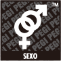
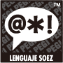
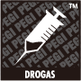
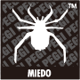
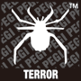
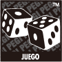

El sistema de clasificación por edades de Información Paneuropea sobre Juegos (PEGI) se estableció con el objeto de ayudar a los consumidores a tomar decisiones a la hora de adquirir videojuegos. Su lanzamiento se produjo en 2003 y sustituyó varios sistemas nacionales de clasificación por edades por uno único que en la actualidad se utiliza en la mayor parte de Europa.
En los juegos vendidos en las tiendas, la clasificación por edades se indica claramente en el embalaje. En los juegos vendidos a través de Nintendo eShop, la clasificación por edades se indica antes de descargar el juego.
En todos los juegos clasificados por PEGI se muestra un icono de edad y,
en ciertos casos, también descriptores del contenido.
Estas son las categorías diferenciadas: 3, 7, 12, 16 y 18 años. Estos iconos indican de manera fiable la idoneidad del contenido para el usuario según su edad. No tienen ninguna relación con la dificultad del juego.






Estos descriptores indican el tipo de contenido que se puede encontrar en el juego. Los contenidos se ajustan siempre a la edad mínima recomendada. Por ejemplo, en el caso de un juego con una clasificación de "16", el descriptor "Violencia" podría referirse a contenido más violento que en otro con una clasificación de "7".
Más información en www.pegi.info.